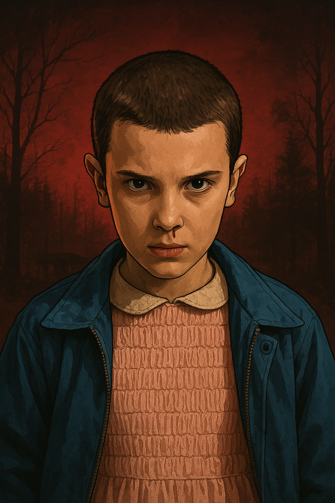
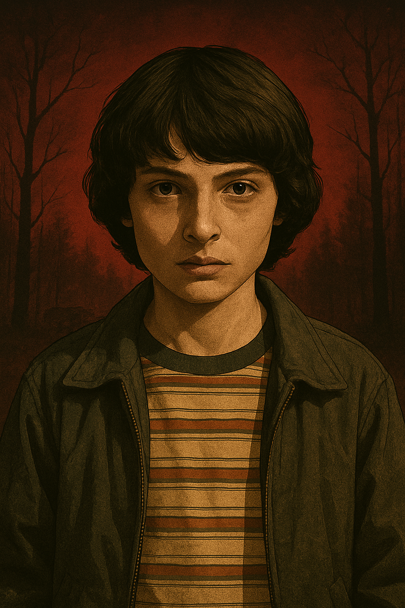
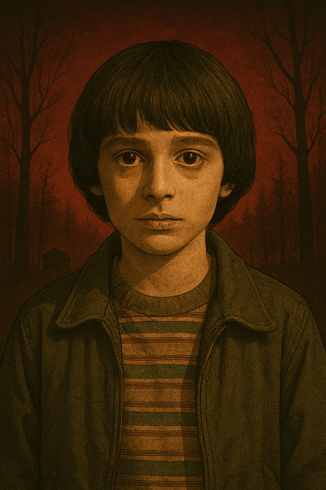
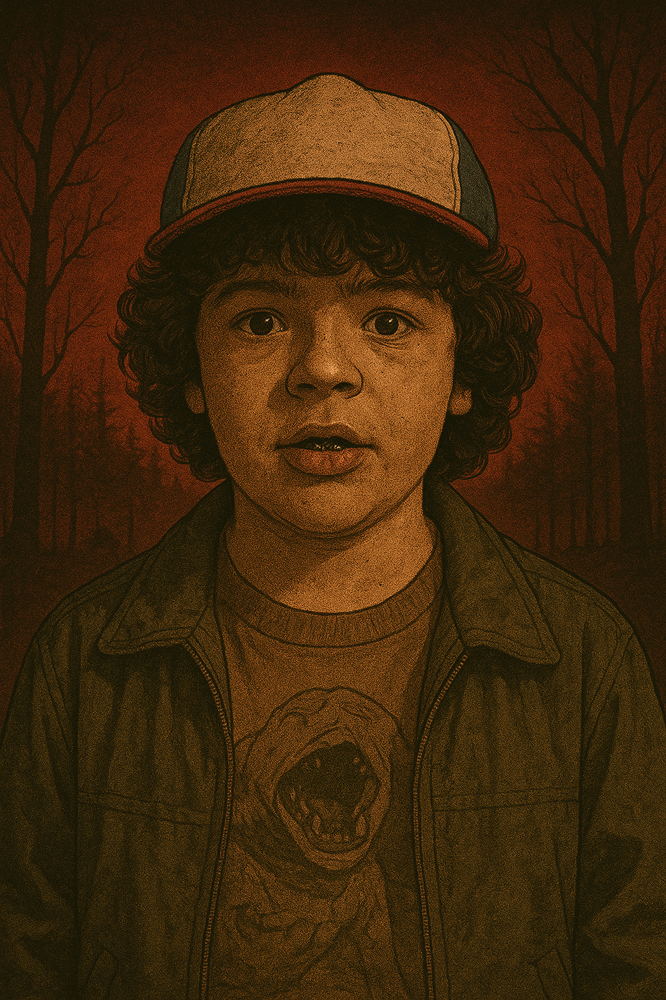
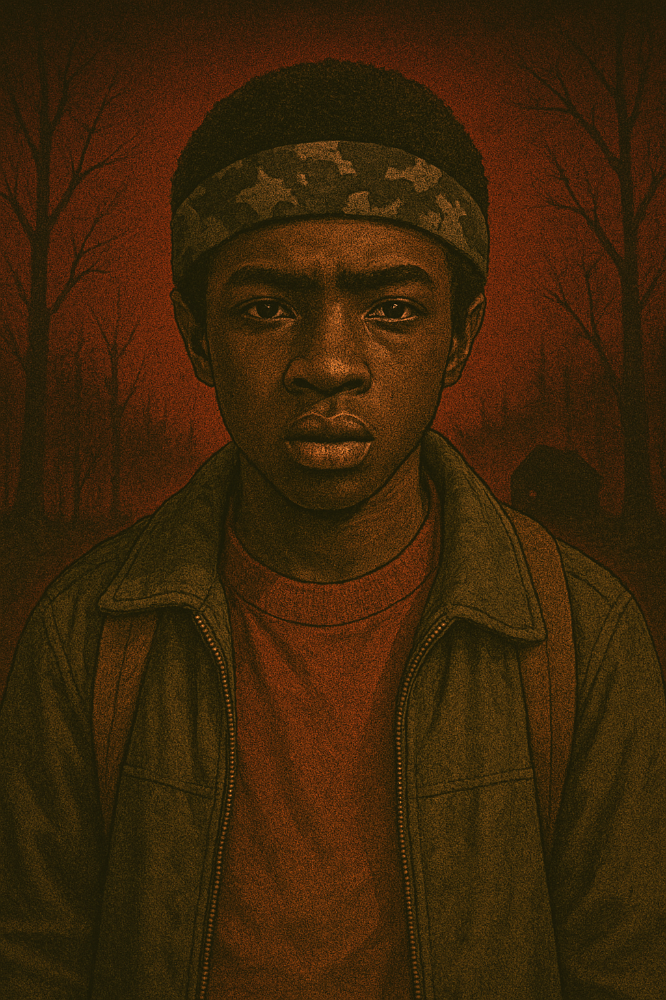
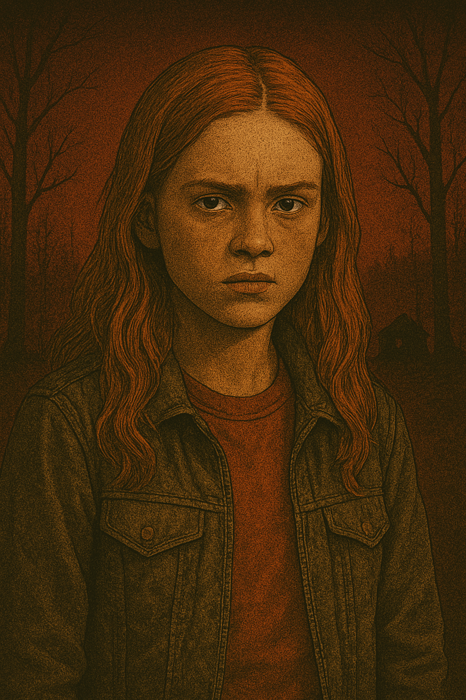

Personajes principales
- Eleven (Once): Una niña con poderes psíquicos y telequinéticos, criada en un laboratorio secreto. Es clave en la lucha contra las amenazas del "Upside Down". 
- Mike Wheeler: Amigo cercano de Will y líder del grupo. Es valiente, leal y desarrolla una relación especial con Eleven. 
- Will Byers: Su desaparición desencadena los eventos de la primera temporada. Es sensible y valiente, y su conexión con el "Upside Down" es fundamental en la serie. 
- Dustin Henderson: Conocido por su inteligencia y sentido del humor. Es un gran amigo y siempre busca soluciones creativas. 
- Lucas Sinclair: Amigo del grupo, es decidido y protector. Siempre está dispuesto a ayudar a sus amigos. 
- Max Mayfield: Se une al grupo en la segunda temporada. Es valiente, hábil con el skate y rápidamente se convierte en parte fundamental del grupo. 
- Jim Hopper: Jefe de policía de Hawkins. Es protector y se convierte en una figura paterna para Eleven.
- Joyce Byers: Madre de Will y Jonathan. Es determinada y nunca se rinde cuando se trata de proteger a sus hijos.